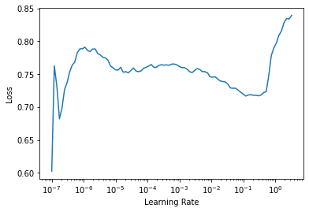

%%capture
!pip install git+https://github.com/fastai/fastai2.git -q
!pip install git+https://github.com/fastai/fastcore.git -q
!pip install -q nbdev
!pip install -q azure-cognitiveservices-search-imagesearch sentencepiece
# Upload utils.py from fastai repository
!wget https://raw.githubusercontent.com/fastai/fastbook/master/utils.pyStarter Notebook for Text Classification using fastai
Outline
- Dataset from the competition of our choice
- Understand the problem and the evaluation metric used
- Setup fastai, Config to store the constants and imports
- Download the data
- Cleaning
- Understand the structure of the data in order to setup the datablock
- data is balanced or imbalanced
- where to fetch the data from
- train-test split, with stratify or cross-validation(kfold, stratifiedKFold)
- decide if preprocessing is required
- decide on the tokenization(or subword)
- debugging help
- Post DataBlock setup
- check the one-batch
- check the summary
- Language Model
- Add Mixed Precision Training
- AWD_LSTM
- integrate callbacks for weights and biases
- train the language model using discriminative learning rates
- save the encoder
- Classification Model
- use the vocab from language model dataloaders
- use the encoder on the learner
- train the model
- gradual unfreezing
- Future
- How to extend it further(by making it public - add Tendo’s share here)
- add pratik and amit’s on structuring the project
- Questions/Reference
- how to train a backward language model
- how to combine forward and backward language model
- How to incorporate blurr along with fastai
- Text Interpretation https://muellerzr.github.io/fastinference/text.inference/
- Captum for text interpretation
- Discriminative Learning Rate https://harish3110.github.io/through-tinted-lenses/natural%20language%20processing/sentiment%20analysis/2020/06/27/Introduction-to-NLP-using-Fastai.html#Discriminative-Fine-tuning
- https://github.com/muellerzr/Practical-Deep-Learning-For-Coders/blob/master/05a_NLP.ipynb
- Mixup for AWD_LSTM https://github.com/fmcurti/MixUp-for-AWD_LSTM/blob/master/ULMFiT.ipynb
# make your Google Drive accessible
from google.colab import drive
drive.mount('/content/gdrive', force_remount=True)
root_dir = "/content/gdrive/My Drive"
drive_data = f"{root_dir}/Colab Notebooks/data/vaccination_tweet"Go to this URL in a browser: https://accounts.google.com/o/oauth2/auth?client_id=947318989803-6bn6qk8qdgf4n4g3pfee6491hc0brc4i.apps.googleusercontent.com&redirect_uri=urn%3aietf%3awg%3aoauth%3a2.0%3aoob&response_type=code&scope=email%20https%3a%2f%2fwww.googleapis.com%2fauth%2fdocs.test%20https%3a%2f%2fwww.googleapis.com%2fauth%2fdrive%20https%3a%2f%2fwww.googleapis.com%2fauth%2fdrive.photos.readonly%20https%3a%2f%2fwww.googleapis.com%2fauth%2fpeopleapi.readonly
Enter your authorization code:
··········
Mounted at /content/gdrivefrom fastai2.text.all import *c = Config()
c['data_path'] = f'{drive_data}'
c['model_path'] = f'{drive_data}/models'
c['bs'] = 128
c['seq_len'] = 72
c.d{'archive_path': '/root/.fastai/archive',
'bs': '128',
'data_path': '/content/gdrive/My Drive/Colab Notebooks/data/vaccination_tweet',
'model_path': '/content/gdrive/My Drive/Colab Notebooks/data/vaccination_tweet/models',
'seq_len': '72',
'storage_path': '/root/.fastai/data',
'version': 2}vaccination = Path(c.d['data_path']);
train_df = pd.read_csv(vaccination/'Train.csv')
test_df = pd.read_csv(vaccination/'Test.csv')
len(train_df), len(test_df)(10001, 5177)train_df.dtypestweet_id object
safe_text object
label float64
agreement float64
dtype: objecttrain_df.dropna(axis='rows', inplace=True);len(train_df)9999#train_df.fillna(value=' ', inplace=True)
test_df.fillna(value=' ', inplace=True)DataLoaders
doc(SentencePieceTokenizer)class SentencePieceTokenizer[source]
SentencePieceTokenizer(lang='en',special_toks=None,sp_model=None,vocab_sz=None,max_vocab_sz=30000,model_type='unigram',char_coverage=None,cache_dir='tmp')
Spacy tokenizer for lang
tweet_lm = DataBlock(
blocks=TextBlock.from_df(text_cols='safe_text', is_lm=True, tok_func=SentencePieceTokenizer, model_type='bpe', max_vocab_sz=10000),
get_x=ColReader('text'),
splitter=RandomSplitter(valid_pct=0.15, seed=42)
)df = pd.concat([train_df, test_df])dls = tweet_lm.dataloaders(source=df, bs=int(c.d['bs']), seq_len=int(c.d['seq_len']))len(dls.vocab)6216Language Learner
doc(language_model_learner)language_model_learner[source]
language_model_learner(dls,arch,config=None,drop_mult=1.0,pretrained=True,pretrained_fnames=None,loss_func=None,opt_func='Adam',lr=0.001,splitter='trainable_params',cbs=None,metrics=None,path=None,model_dir='models',wd=None,wd_bn_bias=False,train_bn=True,moms=(0.95, 0.85, 0.95))
Create a Learner with a language model from dls and arch.
learn_lm = language_model_learner(dls, arch=AWD_LSTM, drop_mult=0.3, pretrained=True, metrics=[accuracy, Perplexity()])learn_lm.lr_find()SuggestedLRs(lr_min=0.2754228591918945, lr_steep=0.013182567432522774)lm_lr = 1e-2learn_lm.fine_tune(8, base_lr=lm_lr)| epoch | train_loss | valid_loss | accuracy | perplexity | time |
|---|---|---|---|---|---|
| 0 | 7.731276 | 5.721750 | 0.173679 | 305.439056 | 00:29 |
| epoch | train_loss | valid_loss | accuracy | perplexity | time |
|---|---|---|---|---|---|
| 0 | 5.676833 | 5.327257 | 0.207547 | 205.872421 | 00:31 |
| 1 | 5.365718 | 4.827284 | 0.255697 | 124.871391 | 00:31 |
| 2 | 5.025544 | 4.518177 | 0.286770 | 91.668335 | 00:31 |
| 3 | 4.728319 | 4.355146 | 0.300401 | 77.878227 | 00:31 |
| 4 | 4.496605 | 4.251612 | 0.311808 | 70.218529 | 00:31 |
| 5 | 4.332778 | 4.201892 | 0.317858 | 66.812614 | 00:31 |
| 6 | 4.213473 | 4.182868 | 0.320936 | 65.553589 | 00:31 |
| 7 | 4.144303 | 4.179251 | 0.321221 | 65.316925 | 00:31 |
learn_lm.save('8_1e-2_lm_fine_tuned')MODEL_PATH = c.d['model_path']learn_lm.save_encoder('8_1e-2_lm_fine_tuned_enc')#learn_lm.save_encoder(f'{MODEL_PATH}/8_1e-2_lm_bpe_fine_tuned_enc')Regression
tweet_cls = DataBlock(blocks=[TextBlock.from_df(text_cols='safe_text', vocab=dls.vocab, tok_func=SentencePieceTokenizer, model_type='bpe', max_vocab_sz=10000),
RegressionBlock],
get_x=ColReader(cols='text'),
get_y=ColReader(cols='label'),
splitter=RandomSplitter(valid_pct=0.2, seed=42))tweet_cls_dls = tweet_cls.dataloaders(source=train_df,verbose=True,
bs=int(c.d['bs']),
seq_len=int(c.d['seq_len']))Setting up after_item: Pipeline: ToTensor
Setting up before_batch: Pipeline: partial
Setting up after_batch: Pipeline: tweet_cls_dls.show_batch(max_n=3)| text | text_ | |
|---|---|---|
| 0 | ▁xxbos ▁ xxunk xxunk xxunk xxunk xxunk xxunk の に mmr xxunk xxunk xxunk xxunk の xxunk xxunk xxunk xxunk xxunk た xxunk $ 550 の xxunk xxunk xxunk xxunk た 。 ▁xxrep ▁4 ▁( ▁; xxunk д xxunk ▁xxrep ▁7 ▁ ) ▁ xxunk xxunk xxunk xxunk xxunk xxunk xxunk に xxunk xxunk し xxunk xxunk xxunk xxunk xxunk た 。 xxunk xxunk xxunk xxunk xxunk xxunk xxunk xxunk xxunk xxunk xxunk 。 | 0.0 |
| 1 | ▁xxbos ▁... в к о л о л и ▁ т у т ▁ м н е ▁xxup ▁mmr - п р и в и в к у ▁... ▁( measles - mumps - r ub ella ▁vaccine ) ▁.... ▁ в ▁ xxunk у д у xxunk е е ▁ с м о т р ю ▁ с ▁ о п т и м и з м о м ▁... | 0.0 |
| 2 | ▁xxbos ▁xxmaj ▁the ▁xxup ▁mmr ▁mo ds p ace ▁xxup ▁m x - 5 ▁team ▁on ▁the ▁gr id ▁for ▁the ▁second ▁xxmaj ▁b atter y ▁xxmaj ▁tend er ▁race ▁at ▁xxmaj ▁se br ing ! ▁# ▁xxmaj ▁se br ing ▁# ▁mo ds p ace ▁# ▁ma z da ▁# ▁m x 5 c up ▁# ▁global m x 5 c up ▁# ▁sc ca | 0.0 |
doc(text_classifier_learner)text_classifier_learner[source]
text_classifier_learner(dls,arch,seq_len=72,config=None,pretrained=True,drop_mult=0.5,n_out=None,lin_ftrs=None,ps=None,max_len=1440,y_range=None,loss_func=None,opt_func='Adam',lr=0.001,splitter='trainable_params',cbs=None,metrics=None,path=None,model_dir='models',wd=None,wd_bn_bias=False,train_bn=True,moms=(0.95, 0.85, 0.95))
Create a Learner with a text classifier from dls and arch.
learn_cls = text_classifier_learner(dls=tweet_cls_dls,
arch=AWD_LSTM,
loss_func=mse,
metrics=rmse,
y_range=[-1, 1])learn_cls.load_encoder(f'8_1e-2_lm_fine_tuned_enc')<fastai2.text.learner.TextLearner at 0x7fce8db1a2b0>learn_cls.lr_find()SuggestedLRs(lr_min=0.012022644281387329, lr_steep=5.754399353463668e-06)
learn_cls.fine_tune(epochs=8, base_lr=1e-2)| epoch | train_loss | valid_loss | _rmse | time |
|---|---|---|---|---|
| 0 | 0.655240 | 0.384711 | 0.620251 | 00:16 |
| epoch | train_loss | valid_loss | _rmse | time |
|---|---|---|---|---|
| 0 | 0.479516 | 0.387409 | 0.622422 | 00:17 |
| 1 | 0.405052 | 0.344687 | 0.587101 | 00:17 |
| 2 | 0.378217 | 0.357070 | 0.597553 | 00:17 |
| 3 | 0.359391 | 0.340642 | 0.583646 | 00:17 |
| 4 | 0.347887 | 0.340789 | 0.583771 | 00:17 |
| 5 | 0.335765 | 0.327030 | 0.571865 | 00:17 |
| 6 | 0.322824 | 0.326958 | 0.571802 | 00:17 |
| 7 | 0.312481 | 0.327277 | 0.572081 | 00:17 |
learn_cls.recorder.plot_loss()Inference - NOT WORKING
test_df.rename(columns={'safe_text': 'text'}, inplace=True)len(test_df)5177test_df| tweet_id | text | |
|---|---|---|
| 0 | 00BHHHP1 | <user> <user> ... & 4 a vaccine given 2 healthy peeps, FDA think just not worth the AE risk unfortunately. |
| 1 | 00UNMD0E | Students starting school without whooping cough vaccinations <url> #scpick |
| 2 | 01AXPTJF | I'm kinda over every ep of <user> being "ripped from the headlines." Measles? Let's get back to crime. #SVU |
| 3 | 01HOEQJW | How many innocent children die for lack of vaccination each year? Around 1.5 million. Too bad all their parents couldn't be here. #SB277 |
| 4 | 01JUKMAO | CDC eyeing bird flu vaccine for humans, though risk is low: Federal officials said Wednesday they're taking steps… <url> |
| ... | ... | ... |
| 5172 | ZXVVNC5O | jenny mccarthy is on new years rockin eve. what has she done lately besides not vaccinate her kids and give us all goddamn polio?? |
| 5173 | ZYIANVI8 | Measles reported in Clark Co. for 1st time since 2011 <url> |
| 5174 | ZYITEHAH | <user> issues alert regarding Measles in TX. Keep your DDx up to date, people! #Emergencymedicine |
| 5175 | ZZ3BMBTG | I can't believe people don't vaccinate their kids! I've been vaccinated for everything and then some. |
| 5176 | ZZIYCVNH | "<user> Alternatives to #Flu Vaccine <url> #natural #health" A good read with a few new tips & many we #jerf folk know |
5177 rows × 2 columns
sent_tfm = Tokenizer.from_df(text_cols='text',
tok_func=SentencePieceTokenizer,
model_type='bpe',
max_vocab_sz=10000)tfms = [attrgetter('text'), sent_tfm, Numericalize()]doc(Datasets)class Datasets[source]
Datasets(items=None,tfms=None,tls=None,n_inp=None,dl_type=None,use_list=None,do_setup=True,split_idx=None,train_setup=True,splits=None,types=None,verbose=False) ::FilteredBase
A dataset that creates a tuple from each tfms, passed thru item_tfms
test_dset = Datasets(items=test_df, tfms=[tfms], splits=None, dl_type=)test_dl = test_dset.dataloaders(bs=int(c.d['bs']), seq_len=int(c.d['seq_len']))learn_cls.dls.test_dl = test_dlpredictions, _, targets = learn_cls.get_preds(dl=test_dl, with_decoded=True)--------------------------------------------------------------------------- RuntimeError Traceback (most recent call last) /usr/local/lib/python3.6/dist-packages/fastai2/learner.py in _do_epoch_validate(self, ds_idx, dl) 182 self.dl = dl; self('begin_validate') --> 183 with torch.no_grad(): self.all_batches() 184 except CancelValidException: self('after_cancel_validate') /usr/local/lib/python3.6/dist-packages/fastai2/learner.py in all_batches(self) 152 self.n_iter = len(self.dl) --> 153 for o in enumerate(self.dl): self.one_batch(*o) 154 /usr/local/lib/python3.6/dist-packages/fastai2/data/load.py in __iter__(self) 97 self.before_iter() ---> 98 for b in _loaders[self.fake_l.num_workers==0](self.fake_l): 99 if self.device is not None: b = to_device(b, self.device) /usr/local/lib/python3.6/dist-packages/torch/utils/data/dataloader.py in __next__(self) 344 def __next__(self): --> 345 data = self._next_data() 346 self._num_yielded += 1 /usr/local/lib/python3.6/dist-packages/torch/utils/data/dataloader.py in _next_data(self) 855 del self._task_info[idx] --> 856 return self._process_data(data) 857 /usr/local/lib/python3.6/dist-packages/torch/utils/data/dataloader.py in _process_data(self, data) 880 if isinstance(data, ExceptionWrapper): --> 881 data.reraise() 882 return data /usr/local/lib/python3.6/dist-packages/torch/_utils.py in reraise(self) 393 msg = KeyErrorMessage(msg) --> 394 raise self.exc_type(msg) RuntimeError: Caught RuntimeError in DataLoader worker process 0. Original Traceback (most recent call last): File "/usr/local/lib/python3.6/dist-packages/torch/utils/data/_utils/worker.py", line 178, in _worker_loop data = fetcher.fetch(index) File "/usr/local/lib/python3.6/dist-packages/torch/utils/data/_utils/fetch.py", line 34, in fetch data = next(self.dataset_iter) File "/usr/local/lib/python3.6/dist-packages/fastai2/data/load.py", line 107, in create_batches yield from map(self.do_batch, self.chunkify(res)) File "/usr/local/lib/python3.6/dist-packages/fastai2/data/load.py", line 128, in do_batch def do_batch(self, b): return self.retain(self.create_batch(self.before_batch(b)), b) File "/usr/local/lib/python3.6/dist-packages/fastai2/data/load.py", line 127, in create_batch def create_batch(self, b): return (fa_collate,fa_convert)[self.prebatched](b) File "/usr/local/lib/python3.6/dist-packages/fastai2/data/load.py", line 46, in fa_collate else type(t[0])([fa_collate(s) for s in zip(*t)]) if isinstance(b, Sequence) File "/usr/local/lib/python3.6/dist-packages/fastai2/data/load.py", line 46, in <listcomp> else type(t[0])([fa_collate(s) for s in zip(*t)]) if isinstance(b, Sequence) File "/usr/local/lib/python3.6/dist-packages/fastai2/data/load.py", line 45, in fa_collate return (default_collate(t) if isinstance(b, _collate_types) File "/usr/local/lib/python3.6/dist-packages/torch/utils/data/_utils/collate.py", line 55, in default_collate return torch.stack(batch, 0, out=out) RuntimeError: invalid argument 0: Sizes of tensors must match except in dimension 0. Got 21 and 38 in dimension 1 at /pytorch/aten/src/TH/generic/THTensor.cpp:612 During handling of the above exception, another exception occurred: IndexError Traceback (most recent call last) <ipython-input-72-e92a753407a5> in <module>() ----> 1 predictions, _, targets = learn_cls.get_preds(dl=test_dl, with_decoded=True) /usr/local/lib/python3.6/dist-packages/fastai2/learner.py in get_preds(self, ds_idx, dl, with_input, with_decoded, with_loss, act, inner, reorder, **kwargs) 227 for mgr in ctx_mgrs: stack.enter_context(mgr) 228 self(event.begin_epoch if inner else _before_epoch) --> 229 self._do_epoch_validate(dl=dl) 230 self(event.after_epoch if inner else _after_epoch) 231 if act is None: act = getattr(self.loss_func, 'activation', noop) /usr/local/lib/python3.6/dist-packages/fastai2/learner.py in _do_epoch_validate(self, ds_idx, dl) 183 with torch.no_grad(): self.all_batches() 184 except CancelValidException: self('after_cancel_validate') --> 185 finally: self('after_validate') 186 187 @log_args(but='cbs') /usr/local/lib/python3.6/dist-packages/fastai2/learner.py in __call__(self, event_name) 132 def ordered_cbs(self, event): return [cb for cb in sort_by_run(self.cbs) if hasattr(cb, event)] 133 --> 134 def __call__(self, event_name): L(event_name).map(self._call_one) 135 def _call_one(self, event_name): 136 assert hasattr(event, event_name) /usr/local/lib/python3.6/dist-packages/fastcore/foundation.py in map(self, f, *args, **kwargs) 373 else f.format if isinstance(f,str) 374 else f.__getitem__) --> 375 return self._new(map(g, self)) 376 377 def filter(self, f, negate=False, **kwargs): /usr/local/lib/python3.6/dist-packages/fastcore/foundation.py in _new(self, items, *args, **kwargs) 324 @property 325 def _xtra(self): return None --> 326 def _new(self, items, *args, **kwargs): return type(self)(items, *args, use_list=None, **kwargs) 327 def __getitem__(self, idx): return self._get(idx) if is_indexer(idx) else L(self._get(idx), use_list=None) 328 def copy(self): return self._new(self.items.copy()) /usr/local/lib/python3.6/dist-packages/fastcore/foundation.py in __call__(cls, x, *args, **kwargs) 45 return x 46 ---> 47 res = super().__call__(*((x,) + args), **kwargs) 48 res._newchk = 0 49 return res /usr/local/lib/python3.6/dist-packages/fastcore/foundation.py in __init__(self, items, use_list, match, *rest) 315 if items is None: items = [] 316 if (use_list is not None) or not _is_array(items): --> 317 items = list(items) if use_list else _listify(items) 318 if match is not None: 319 if is_coll(match): match = len(match) /usr/local/lib/python3.6/dist-packages/fastcore/foundation.py in _listify(o) 251 if isinstance(o, list): return o 252 if isinstance(o, str) or _is_array(o): return [o] --> 253 if is_iter(o): return list(o) 254 return [o] 255 /usr/local/lib/python3.6/dist-packages/fastcore/foundation.py in __call__(self, *args, **kwargs) 217 if isinstance(v,_Arg): kwargs[k] = args.pop(v.i) 218 fargs = [args[x.i] if isinstance(x, _Arg) else x for x in self.pargs] + args[self.maxi+1:] --> 219 return self.fn(*fargs, **kwargs) 220 221 # Cell /usr/local/lib/python3.6/dist-packages/fastai2/learner.py in _call_one(self, event_name) 135 def _call_one(self, event_name): 136 assert hasattr(event, event_name) --> 137 [cb(event_name) for cb in sort_by_run(self.cbs)] 138 139 def _bn_bias_state(self, with_bias): return bn_bias_params(self.model, with_bias).map(self.opt.state) /usr/local/lib/python3.6/dist-packages/fastai2/learner.py in <listcomp>(.0) 135 def _call_one(self, event_name): 136 assert hasattr(event, event_name) --> 137 [cb(event_name) for cb in sort_by_run(self.cbs)] 138 139 def _bn_bias_state(self, with_bias): return bn_bias_params(self.model, with_bias).map(self.opt.state) /usr/local/lib/python3.6/dist-packages/fastai2/callback/core.py in __call__(self, event_name) 22 _run = (event_name not in _inner_loop or (self.run_train and getattr(self, 'training', True)) or 23 (self.run_valid and not getattr(self, 'training', False))) ---> 24 if self.run and _run: getattr(self, event_name, noop)() 25 if event_name=='after_fit': self.run=True #Reset self.run to True at each end of fit 26 /usr/local/lib/python3.6/dist-packages/fastai2/callback/core.py in after_validate(self) 94 "Concatenate all recorded tensors" 95 if self.with_input: self.inputs = detuplify(to_concat(self.inputs, dim=self.concat_dim)) ---> 96 if not self.save_preds: self.preds = detuplify(to_concat(self.preds, dim=self.concat_dim)) 97 if not self.save_targs: self.targets = detuplify(to_concat(self.targets, dim=self.concat_dim)) 98 if self.with_loss: self.losses = to_concat(self.losses) /usr/local/lib/python3.6/dist-packages/fastai2/torch_core.py in to_concat(xs, dim) 211 def to_concat(xs, dim=0): 212 "Concat the element in `xs` (recursively if they are tuples/lists of tensors)" --> 213 if is_listy(xs[0]): return type(xs[0])([to_concat([x[i] for x in xs], dim=dim) for i in range_of(xs[0])]) 214 if isinstance(xs[0],dict): return {k: to_concat([x[k] for x in xs], dim=dim) for k in xs[0].keys()} 215 #We may receives xs that are not concatenatable (inputs of a text classifier for instance), IndexError: list index out of range
targetstensor([[-0.6514],
[ 0.5469],
[ 0.2638],
...,
[ 0.2053],
[ 0.9290],
[ 0.6997]])vaccination.ls()(#4) [Path('/content/gdrive/My Drive/Colab Notebooks/data/vaccination_tweet/SampleSubmission.csv'),Path('/content/gdrive/My Drive/Colab Notebooks/data/vaccination_tweet/Train.csv'),Path('/content/gdrive/My Drive/Colab Notebooks/data/vaccination_tweet/Test.csv'),Path('/content/gdrive/My Drive/Colab Notebooks/data/vaccination_tweet/models')]submission = pd.read_csv(vaccination/'SampleSubmission.csv')submission.head()| tweet_id | label | |
|---|---|---|
| 0 | 00BHHHP1 | 0 |
| 1 | 00UNMD0E | 0 |
| 2 | 01AXPTJF | 0 |
| 3 | 01HOEQJW | 0 |
| 4 | 01JUKMAO | 0 |
len(submission), len(predictions)(5177, 5177)submission['label'] = predictions.flatten()submission| tweet_id | label | |
|---|---|---|
| 0 | 00BHHHP1 | -0.651409 |
| 1 | 00UNMD0E | 0.546905 |
| 2 | 01AXPTJF | 0.263799 |
| 3 | 01HOEQJW | 0.988286 |
| 4 | 01JUKMAO | 0.055132 |
| ... | ... | ... |
| 5172 | ZXVVNC5O | 0.890525 |
| 5173 | ZYIANVI8 | 0.190089 |
| 5174 | ZYITEHAH | 0.205295 |
| 5175 | ZZ3BMBTG | 0.928989 |
| 5176 | ZZIYCVNH | 0.699665 |
5177 rows × 2 columns
submission.to_csv('submission.csv', index=False)